我们介绍 Magistral，这是 Mistral 的首个推理模型，以及我们自主构建的可扩展强化学习（RL）流水线。我们没有依赖已有实现，也没有依赖从先前模型蒸馏得到的 RL 轨迹，而是采取从零开始的方法，完全依靠自己的模型与基础设施。具体而言，我们展示了一套使我们能够探索 LLM 纯 RL 训练极限的技术栈，提出一种强制指定模型推理语言的简单方法，并表明仅对文本数据进行 RL 就能保留初始 checkpoint 的大部分能力。我们发现，文本 RL 能维持或改善多模态理解、指令遵循和函数调用。我们推出 Magistral Medium，它以 Mistral Medium 3 为基础，仅通过 RL 训练推理能力；同时，我们开源了 Magistral Small（Apache 2.0），它还使用了来自 Magistral Medium 的冷启动数据。
增强 LLM 的推理能力已经成为现代 AI 研究的一个关键前沿。o1 [Jaech et al., 2024] 等推理模型与传统聊天机器人差异很大，它们利用更长的 chain-of-thought 来提升复杂任务的表现。DeepSeek-AI et al. [2025] 的开创性工作为社区提供了关于 RLVR 方法的重要见解，使大规模构建推理模型成为可能。
本文介绍 Mistral 的首批推理模型 Magistral Small 和 Magistral Medium，分别以 Mistral Small 3 和 Mistral Medium 3 为基础，并详细说明我们提出的 RLVR 框架。本文的主要贡献如下：
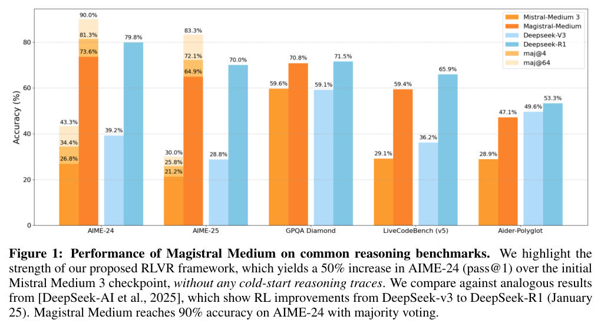
本文结构如下：第 2 节详细介绍我们使用的 RL 算法，以及用于引导推理模型语言与格式的设计选择；第 3 节介绍支持在大型 GPU 集群上高效训练的可扩展基础设施；第 4 节讨论我们为实现高效且有效训练而采用的数据筛选过程；第 5 节展示 Magistral 在推理和多语言基准上的表现；第 6 节展示用于论证训练选择的消融实验；第 7 节介绍基于 PCA 的模型权重在 RL 过程中轨迹的研究，证明对文本数据进行 RL 能保留甚至改善多模态能力，并介绍一些对 Magistral 效果不佳的方法；第 8 节表明，通过先蒸馏再 RL，可以训练出表现与 R1 相当的模型，但我们没有对 Magistral Medium 使用这种方法；最后，第 9 节总结并提出一些未来方向。
本节概述开发 Magistral 模型所使用的训练方法。内容包括为提高训练稳定性而对 GRPO 算法进行的优化（第 2.1 节），以及用于同时改善数学和编程能力、并确保模型遵守适当格式、长度与语言使用要求的训练奖励（第 2.2 节）。
我们使用 Group Relative Policy Optimization（GRPO）[Shao et al., 2024] 作为 RL 算法。与 PPO [Schulman et al., 2017] 不同，GRPO 不需要“critic 模型”，而是利用策略对每个提示生成多个输出的平均奖励，计算优势估计的基线。具体而言，GRPO 优化策略 \(\pi _{\theta}\)，以最大化以下目标：
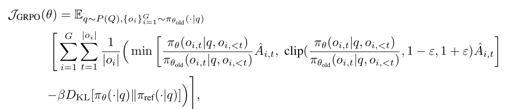
其中，\(q\) 表示从输入数据集中抽取的查询，\(o\) 表示模型生成的输出，\(\epsilon\) 是 PPO 裁剪阈值，\(\beta\) 是 KL 惩罚系数，\(D_{KL}\) 表示当前策略 \(\pi _{\theta}\) 与参考策略 \(\pi _{ref}\) 之间的 Kullback–Leibler 散度。相对优势，或称组归一化优势，为 \(\hat{A}_{i,t} = (r_{i} - \mu ) / \sigma\)，其中 \(\mu\) 和 \(\sigma\) 分别为单个组内计算所得奖励的均值与（接下一页）
（接上一页）标准差。在已有针对推理任务调整 GRPO 的工作 [Yu et al., 2025, Liu et al., 2025, Hu et al., 2025] 基础上，我们做了几项修改：
去除 KL 散度。KL 散度惩罚约束在线策略，使其不会过度偏离参考策略，有助于维持与初始模型的对齐。然而，在 GRPO 中，策略仍然会产生显著偏离；保留一份参考模型来计算 KL 会产生计算开销，我们认为这种开销并不合理。因此，我们完全移除了 KL 惩罚。
损失归一化。为了避免在同一组不同输出之间引入长度偏差，我们先汇总所有输出中全部 token 的逐 token 损失，然后除以该组输出的总长度 \(\sum _{i=1}^{G} |o_{i}|\)，以此对损失进行归一化。
优势归一化。我们将每个 token 的优势直接估计为 \(\hat{A}_{i,t} = \hat{A}_{i} = r_{i} - \mu\)，其中 \(\mu\) 是组内奖励均值。遵循 Andrychowicz et al. [2020]，我们还在每个 mini-batch 内归一化优势：\(\hat{A}^{norm}_{i,t} = (\hat{A}_{i} - \hat{A}_{mean}) / \hat{A}_{std}\)，其中 \(\hat{A}_{mean}\) 和 \(\hat{A}_{std}\) 是 mini-batch 内优势 \(\hat{A}_{i}\) 按序列计算的均值与标准差。
放宽信赖域上界。我们允许模型探索罕见但可能富有启发性的推理步骤，避免策略变得确定化。我们采用 Clip-Higher [Yu et al., 2025] 策略来应对熵坍缩。在标准 GRPO 中，\(\epsilon\) 裁剪限制低概率 token 的概率增长，从而限制探索，阻碍对罕见但重要推理路径的强化。将裁剪上界增大到 \(\epsilon _{high}\)，可以为低概率 token 提供更大的增长空间，提高输出的熵与多样性，并改善推理探索。我们发现，仔细调节 \(\epsilon _{high}\) 对保持 RL 训练稳定至关重要。在训练期间，我们将其在 0.26 与 0.28 之间调整，以保持组熵稳定。
去除缺少多样性的组。如果一组内所有输出全部正确或全部错误，其优势为零，因此对 batch 损失没有贡献。这会使 gradient 更小，对噪声更加敏感。为解决这个问题，我们在构造训练 batch 时过滤掉所有优势为零的组。
最终的 GRPO 损失如下，所有修改均以红色标出：
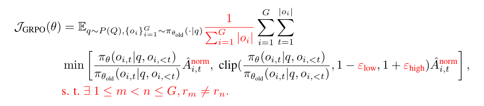
选择合适的奖励，对于 RL 算法有效运行至关重要。训练期间，我们从格式、正确性、长度和语言一致性四个维度评估模型输出，下面分别介绍。
对于数学和编程问题，我们都要求模型遵循特定格式，以方便提取模型答案：
<think> 标签开头，并包含对应的 </think> 标签。（ii）回答中必须恰好出现一组这样的标签。</think> 标签之后的答案部分中，用 \boxed{} 包围最终答案。不满足上述任意条件时，奖励为 0，并且不再继续评判该回答。否则，回答获得 0.1 的奖励，并进入正确性评判。
如果生成的答案符合要求的格式，我们提取模型解答，并使用验证器评估其正确性。
数学正确性。从解答中最后一个 \boxed{} 内部提取最终答案，再使用基于规则的验证器与参考答案比较。验证器对标准答案与生成答案都进行归一化，以正确奖励语义一致但语法不同的回答。我们结合不同解析器与 SymPy2，评估输出并将其与原始标准答案比较。如果答案正确，额外奖励 0.9，使总奖励达到 1.0。
代码正确性。从答案部分的第一个 Markdown 代码块中提取代码。如果代码使用 C++，则采用 \(C++20\) 标准编译，超时时间为 10 秒。我们预先编译竞赛编程中常用的 bits/stdc++.h 标准库头文件，以加快编译过程。我们从可用测试用例中随机选择 20 个测试，并确保给定回答组内使用相同测试。随后在这些测试上运行代码，每个测试的超时时间为 4 秒，内存限制为 300 MB。如果代码成功通过所有测试，则额外奖励 0.9。
遵循 [Yu et al., 2025]，我们使用软长度惩罚，提示模型已接近最大补全长度的硬截断。我们固定 \(l_{max}\) 和 \(l_{cache}\) 两个长度，并按下式计算长度惩罚：
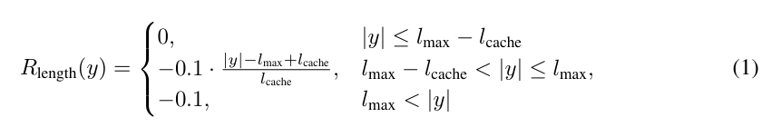
Magistral 的一个核心设计原则是使用与用户相同的语言进行推理。如果不进行任何处理，直接对数学与编程问题进行强化学习，往往会让模型回答混用不同语言。在没有语言约束的初步实验中，我们经常观察到输出混用英语、汉语和俄语词语。尽管这些输出是连贯的，但从用户角度看并不理想。
为了防止语言切换，我们将 10% 的英文问题翻译成以下语言：法语、西班牙语、意大利语、德语、汉语和俄语。在为一个对话——即（问题、思考、答案）三元组——计算奖励时，我们首先移除 LaTeX 内容和代码块，对三个组成部分分别进行归一化，然后分别应用 fastText 分类器 [Joulin et al., 2016]。如果分类器判定三个部分使用同一种语言，我们额外奖励 0.1。
这些简单修改已经足以让模型紧密遵循用户的语言，将语码切换减至很少，同时保持推理任务表现。虽然我们只把原始英文问题翻译成少数几种语言，但观察到模型能够成功以任意语言生成 chain-of-thought。
系统提示。我们在系统提示中指定格式和语言要求，具体见图 2。我们发现，RL 训练对所使用的系统提示相当敏感。例如，系统提示中的“Be as casual and as long as you want”（可以尽可能随意，篇幅也不受限制）会增加模型的熵，从而改善模型的探索。
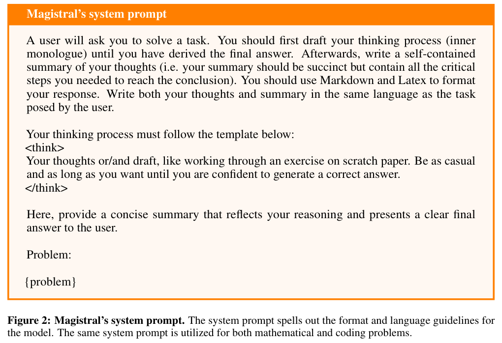
本节介绍用于在线训练的基础设施。我们采用分布式 RL 训练系统，类似于若干先前工作 [Espeholt et al., 2018, Hu et al., 2024, Noukhovitch et al., 2024, Sheng et al., 2024, Wu et al., 2025] 提出的系统，协调三类 worker：
分布式 RL 面临的挑战。生成器占总计算量的很大一部分，也是在线 RL 独有的部分。它们的工作负载高度异构且难以预测，因为序列长度分布高度偏斜，并且在训练过程中会发生变化：最长补全所需的时间可能是最短补全的 5 倍。系统的主要约束之一，是不引入序列长度偏差：即使较短补全完成得更快，补全长度的分布也必须与训练数据的分布完全一致。与之相竞争的目标，是尽快更新生成器权重。我们希望输出尽可能保持 on-policy，也希望生成器运行时不必等待其他生成器或训练器。
异步生成。为了在没有任何近似的情况下训练，我们可以按顺序处理 batch：启动生成器处理一个 batch，等待所有序列完成，更新训练器与生成器的模型权重，然后重复。然而，补全时间不同会让生成器闲置，导致流水线效率低下。因此，我们优先考虑效率，让生成器持续以最大吞吐量运行，完全不等待训练器。我们不断收集生成器产生的组，验证它们，并更新训练器。更新之后，训练器通过 NCCL 将新权重发送给生成器，但不丢弃当前仍在生成的进行中序列。GPU 到 GPU 的权重广播至关重要，因为即使模型很大且分布式进程总数很大，它也能把单次更新时间降至 5 秒以内。图 3 展示了这个过程。
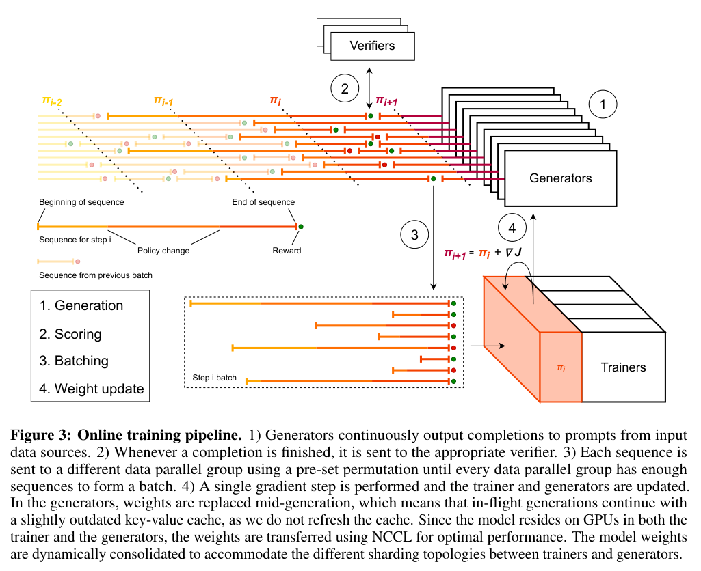
对于单个提示，在生成解答的过程中，模型权重可能经历多次更新，反映训练器带来的最新改进。当解答被完整处理并发送给训练器时，模型权重可能已经更新多次，但最新 token 始终以 on-policy 方式生成。更新模型权重时，先前储存在 KV cache 中的隐藏状态会略微过时，因为它们由旧版本模型计算得到。出于性能考虑，我们发现无需重新计算 KV cache，这可能归因于损失函数内在的 off-policy 校正 [Schulman et al., 2017]。
训练器优化。我们将 batch 定义为固定数量的生成补全，而不是固定数量的 token。生成器按照预设置换，将每个完成的补全发送给随机的训练器 rank。当每个数据并行 rank 都收到足够组成一个 batch 的补全时，执行一次 gradient 更新。如果训练器成为瓶颈——例如训练早期，输出仍然很短时——我们将收到的输出积累到一个具有固定大小上限的阻塞队列中，用它控制 off-policy 程度。一个 batch 可以被划分成多个 mini-batch，以执行多次优化步骤（见第 6.3 节）。每个 mini-batch 的补全数量固定，但 token 数量可变，因此又被划分为 token 数量固定的 micro-batch。由于我们跨 micro-batch 累积 gradient，样本顺序并不重要。我们利用这一性质实现了一个贪心整理算法：按长度降序排列序列，然后逐一尝试将序列放入仍有空间的 micro-batch；如果没有合适的，就新建一个。这保证了每个 mini-batch 中各训练 worker 的工作负载均衡，并将 padding 减少了 19%。
我们只使用解答可验证的问题；数学问题的解答是数值答案或表达式，编程问题则具有配套测试。我们进行了大量过滤，下面介绍这些过程。
格式过滤。我们从一个约 700k 样本、规模很大但噪声较多的问题集开始。首先对数据进行全面预处理和过滤，确保所有问题完整，最终答案准确且能够通过规则系统验证。具体而言，我们过滤掉难以验证正确性的证明题和多部分问题。此外，我们将选择题重新表述为陈述式问题，使验证更稳健，并提高难度。
难度过滤。我们实现了一条两阶段过滤流水线，用于构建难度恰到好处的问题数据集，既不会过于简单，也不会过于困难，使模型能够从中学习。首先，使用 Mistral Large 2 [MistralAI, 2024] 进行初始难度评估：为每个问题采样 16 个解答，移除从未解决或者成功率很高的问题。随后，我们用这批最初筛选的问题，通过在线 RL 流水线训练一个 24B 模型，得到一个较小但有能力的 checkpoint，仅用于评判。
在第二阶段，我们用这个更强的 RL 训练模型重新评判整个原始数据集。我们再次为每个问题采样 16 个回答，过滤掉最简单和仍无法解决的问题。随后进一步过滤潜在错误的问题：大多数样本具有相同的最终答案，但与“标准答案”不一致。这是因为，当模型持续得到与参考解答相矛盾的共识时，问题本身的标准答案更有可能有误。
这种两阶段方法至关重要，因为仅用最初较弱的 Mistral Large 2 模型进行一次过滤是不够的。受其推理能力限制，它很可能错误地将许多真正困难的问题归类为不可解，从而将其丢弃。通过使用更强的 RL 训练模型进行第二次过滤，我们确保这些有价值且具有挑战性的训练样本得到准确评估并被保留。
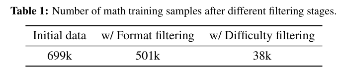
我们从多个来源收集编程竞赛数据。每个数据点包含问题陈述，以及可获取时的正确解答和相关测试。训练过程需要问题陈述，以及每个问题大量正确的测试。为此，我们首先移除既没有解答、也没有足够测试的问题。然后在所有可用测试上执行每个解答，丢弃一致性不足的测试。如果一个测试具有足够一致性，但没有解答成功通过，我们假定该测试有误，并将其更新为各解答输出中最常见的结果。对于缺少测试的编程问题，我们生成额外测试，并对其进行相同的评估。
最后，在适用的情况下，我们复制问题陈述，分别要求用竞赛编程中常见的 Python 或 C++ 编写代码。这个过程产生了一个包含 35k 编程问题的数据集。
本节介绍 Magistral 模型。我们的目标是回答两个问题：（i）仅对大型基础模型进行纯强化学习，能达到什么水平？（ii）在有强大教师模型的情况下，如何得到尽可能强的轻量模型？为此，我们以 Mistral Medium 3 [MistralAI, 2025] 为基础，使用纯 RL 训练了 Magistral Medium；同时训练了 Magistral Small，它从源自 Magistral Medium 的 SFT 轨迹开始。
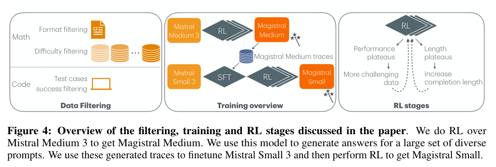
我们报告了评估数学、编程和 STEM 领域能力的基准结果。数学方面，我们提供美国数学邀请赛基准（AIME’24、AIME’25）与 MATH 数据集 [Hendrycks et al., 2021] 的结果。编程方面，我们纳入 LiveCodeBench（v5 和 v6 版本）[Jain et al., 2024] 与 Aider Polyglot [Gauthier, 2024]。STEM 方面，我们报告 GPQA 数据集 [Rein et al., 2024] 的结果。此外，我们还报告 Humanity’s Last Exam [Phan et al., 2025] 中纯文本问题的结果，该基准包含跨数十个学科的 2,500 个问题，涵盖数学、人文学科和自然科学。所有评估任务的 temperature 均设为 0.7；数学评估与 GPQA 的 top-p 为 1.0，编程任务则为 0.95。AIME 和 LiveCodeBench 的最大 token 长度设为 40k，其他全部评估为 32k。
基线采用 [DeepSeek-AI et al., 2025] 的结果，该工作报告了大规模 RL 训练的可比数据点，包括使用和不使用推理模型轨迹进行 SFT 两种情况。
这里，我们的目标是在不进行任何“冷启动”（即通过蒸馏推理轨迹来预先引导推理）的情况下训练模型，以评估 RL 技术栈的质量。该训练使用 Mistral Medium 3 Instruct [MistralAI, 2025] 作为起始 checkpoint。训练分多个阶段进行，各阶段采用不同的超参数。具体而言，阶段设计始终确保满足以下条件：
表 2 展示仅通过 RL 训练的 Magistral Medium 的结果，并与 [DeepSeek-AI et al., 2025] 中的类似实验进行比较。我们发现，仅用我们的 RL 流水线，就使 AIME’24（pass@1）的准确率提高近 50%，LiveCodeBench（v5）提高 30%。
有了 Magistral Medium 这个强大的“教师”模型后，我们进一步探索如何训练尽可能强的学生模型。为此，我们训练 Magistral Small，使用来自 Magistral Medium 的 SFT 轨迹进行“冷启动”。
与纯 RL 训练（它受益于一个规模较小但极其干净、困难的训练样本集，见第 4 节）相比，我们发现提示的多样性对推理冷启动很重要。我们首先从 Magistral Medium 的 RL 训练中提取最终答案正确的轨迹，排除早期步骤中 CoT 较短的轨迹。我们还通过限制每个问题的生成次数，避免收集的轨迹偏向简单问题，并对通过率较低的问题进行上采样，以维持问题难度的混合分布。
我们进一步增强这些 SFT 冷启动数据：在一大批多样化提示上，使用 Magistral Medium 生成回答；提示来自 OpenThoughts [Guha et al., 2025] 与 OpenR1 的代码子集 [Hugging Face, 2025, Penedo et al., 2025]。我们在此基础上进行额外过滤，仅保留一部分提示。这使我们得到一个难度混合的推理数据集。我们还纳入 10% 的通用指令微调数据点，以保留非推理能力。我们对 Mistral Small 3 Instruct（一个 240 亿参数模型）微调 4 个 epoch，并选择 AIME’24 上最佳的 checkpoint，作为后续 RL 阶段的初始 checkpoint。
随后，我们用 RL 训练这个 SFT checkpoint，batch 大小为 2048 个序列，最大不受惩罚补全长度 \(l_{max} - l_{cache}\) 为 32k。生成时采用 1.0 的采样 temperature，因为它在避免较低 temperature 导致的缺少多样性和较高 temperature 导致的不连贯输出之间取得了最佳平衡。我们使用 \(\epsilon _{high} = 0.3\) 来鼓励探索，因为冷启动模型产生的回答熵要低得多。
表 3 展示 24B 模型在三种不同训练范式下的表现：仅 SFT、仅 RL，以及在冷启动 checkpoint 上进行 RL。这里，与 [DeepSeek-AI et al., 2025] 的发现相反，我们发现即使基础模型较小，RL 仍能在从大型教师模型蒸馏的基础上带来显著提升。这凸显了本文所介绍 RL 技术栈的强大效果。
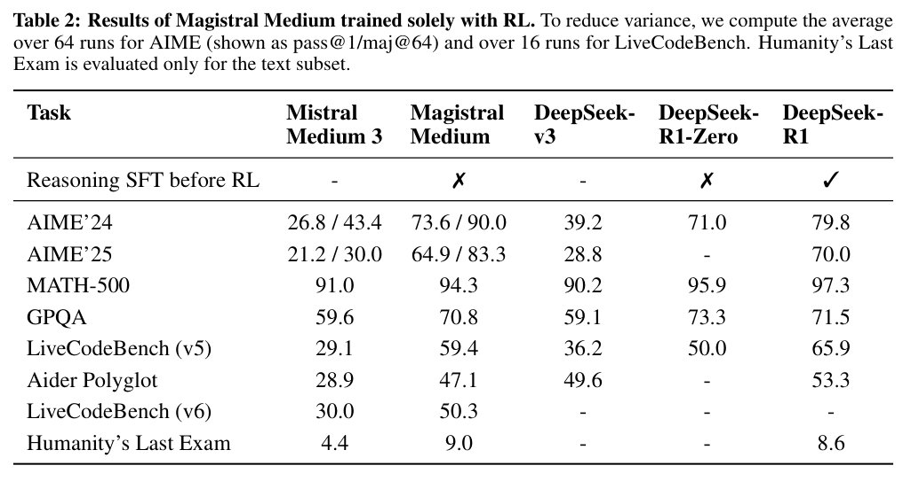
为评估 Magistral 的多语言能力，我们使用多种语言与 Magistral Medium 交互，检查它是否能够以用户的语言推理并作答。我们还在 AIME 2024 基准的多语言版本（法语、西班牙语、德语、意大利语、俄语和汉语）上测试 Magistral Medium。这些多语言版本通过将英文问题翻译成各语言得到。结果见表 4。我们看到，多语言版本上的表现比英文版本低 4.3–9.9%，对应实际 AIME 测试中的 1–3 道题，这可能是因为我们限制了推理语言。这种下降幅度与基础模型大致相似。请注意，在多语言基准上，全部推理和最终回答都使用输入语言（即并非英语）进行。
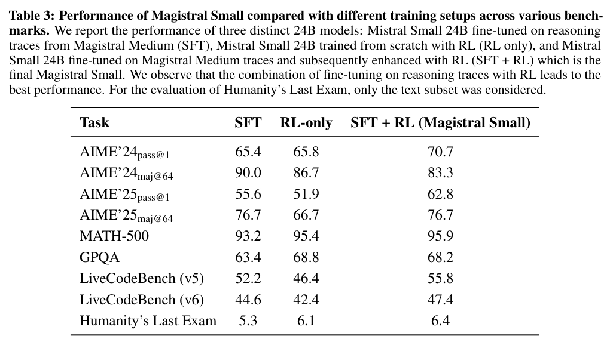
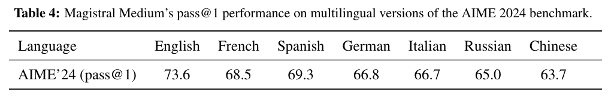
本节通过调整训练过程参数，研究仅在一种模态上进行 RL 时会发生什么，将 RL 与蒸馏 SFT 基线比较，并阐明我们必须权衡的两项训练选择：batch 与 mini-batch 大小，以及优势归一化。
我们通过在一个领域（数学或代码）上训练、在另一个领域上评估，研究模型跨领域泛化能力。具体而言，我们在 24B 模型上进行两个实验：一个仅用数学数据训练，并在数学和代码上评估；另一个仅用代码训练，同样在两者上评估。如表 5 所示，模型在域外任务上表现强劲，展示了 RL 的泛化能力。
先前工作 [DeepSeek-AI et al., 2025] 观察到，仅依赖 RL 的小模型，可能无法达到从较大型推理模型蒸馏得到的模型的表现。然而，我们的发现与此相反：即使仅在 Mistral Small 3 上进行纯 RL，我们也获得了强劲结果。（接下一页）
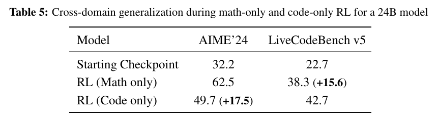
（接上一页）如图 5 所示，我们仅通过纯 RL 训练的 Mistral Small 3，在 AIME’24 上取得与蒸馏版本相似的表现。它在 MATH 和 GPQA 上甚至超越了蒸馏版本，但在 LiveCodeBench 等代码基准上略逊一些。这些结果表明，RL 的收益并不局限于大型基础模型，对较小模型同样成立。此外，我们的结果表明，在蒸馏 checkpoint 上进行 RL 可以获得更好的表现，在多个基准上带来超过 5 个点的提升。
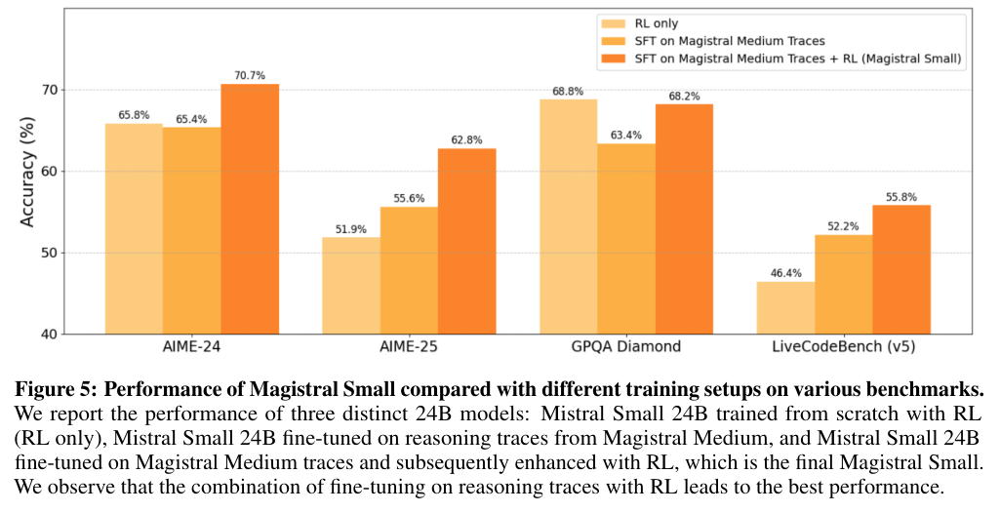
PPO 或 GRPO 等强化学习（RL）算法引入了两种不同的 batch 尺度。batch 大小记为 \(n_{batch}\)，是更新生成器权重之前收集的序列数量。mini-batch 大小 \(n_{minibatch}\) 表示用于计算 gradient 并执行单次优化步骤的序列数量。需要注意，\(n_{minibatch}\) 必须整除 \(n_{batch}\)。此外，异步 RL 流水线还引入第三个尺度：并发序列数量 \(n_{async}\)，即并行生成的序列数量。如果并发生成序列数量 \(n_{async}\) 远大于 batch 大小 \(n_{batch}\)，一个典型序列会由 \(n_{async} / n_{batch}\) 个不同策略生成，可能过于 off-policy。当每个 batch 执行超过一次 mini-batch 更新时，这种影响更加严重。
为测试这一假设，我们从 Ministral 3B 出发，通过 SFT 得到一个强大的 3B 模型，然后使用 GRPO 在纯数学数据上训练，采用恒定学习率，固定 \(n_{async} = 4096\)，并让 \(n_{batch}\) 与 \(n_{minibatch}\) 在 {1024, 2048, 4096, 8192} 中取不同值。
我们观察到，只要保持 \(n_{batch} = n_{minibatch}\) 且 \(n_{batch}\) 足够大，当以已处理提示数量为横轴绘制表现时，结果就非常相似，如图 6（\(a\)）所示。另一方面，保持 \(n_{batch}\) 不变但减小 \(n_{minibatch}\) 时，表现突然下降；即使与把 \(n_{batch}\) 缩小至相同 \(n_{minibatch}\) 的情形相比也是如此，图 6（\(b\)）突出展示了这一点。当 \(n_{batch} \le 1024\) 时，训练变得不太稳定，因此最终训练与后续消融实验中，我们选择保持 \(n_{async} / n_{batch} \le 2\)，并保持 \(n_{batch} = n_{minibatch}\)。
我们试验了以下优势归一化方法：
先前工作 [Liu et al., 2025, Andrychowicz et al., 2020] 指出，对给定问题的一组输出进行归一化可能引入偏差：由于标准差较低，简单问题或困难问题的权重会（接下一页）
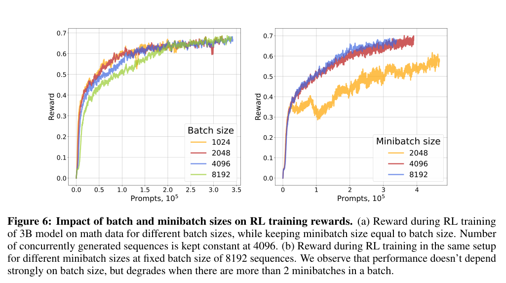
（接上一页）被提高。然而，如图 7 所示，我们没有观察到它们对评估表现或长度增长有显著影响。因此，我们决定在全部实验中使用 mini-batch 归一化。
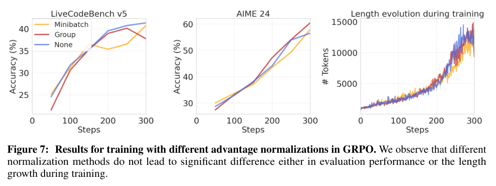
本节研究 RL 训练动态，并给出证据表明，增加补全长度是提升模型表现的主要资源。这些动态不会破坏先前能力，而且推理能力甚至能够泛化：多模态推理无需额外代价便得到改善，函数调用与指令遵循保持不变，甚至略有提升。此外，我们讨论两种未奏效的想法：在代码任务中基于测试完成率给予更细粒度奖励，以及通过损失中的熵奖励项来控制熵。
为更好理解 Magistral 在 RL 训练中的动态，我们遵循 [Li et al., 2018] 的方法，分析 Magistral Small 的仅 RL 训练，并可视化最终 checkpoint 周围的损失景观。
首先，我们把所有中间 checkpoint 的权重堆叠成矩阵 \(X \in \mathbb{R} ^{T\times W}\)，其中 \(T\) 是 checkpoint 数量，\(W\) 是权重数量。然后，我们减去 \(T\) 个 checkpoint 的平均权重，（接下一页）
（接上一页）并进行 PCA 分析，以找到矩阵 \(X\) 在权重空间中的两个主成分。由于权重空间维度极高，我们使用迭代式 Lanczos–Arnoldi 算法 [Saad, 2003] 求取 \(X^{T}X\) 的前两个特征向量。由此得到两个成分 \(c_{1}\) 和 \(c_{2}\)，并通过 L2 归一化使它们具有单位范数。
其次，我们通过加入两个成分来扰动最终 checkpoint 权重 \(w* \in \mathbb{R} ^{W}\)：
w(α1, α2) = w* + α1c1 + α2c2 （2）
我们在固定的 512 个提示组成的 batch 上评估每个扰动后的 checkpoint，每个提示生成 16 个补全，并使用与 Magistral Small 仅 RL 训练相同的奖励设置。最后，我们计算每个 checkpoint 的平均奖励与平均输出长度，并在 \((\alpha _{1}, \alpha _{2})\) 坐标中绘制。
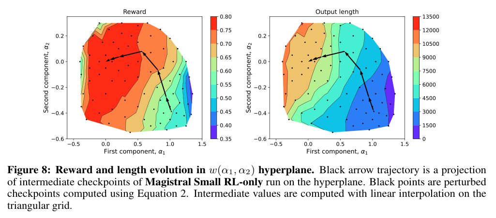
我们清晰观察到一个“长度”方向：当模型在图 8 中从右向左移动时，平均奖励与输出长度不断增长，直到长度开始触及长度惩罚和允许的最大补全长度。我们还绘制不包含长度惩罚的原始奖励对输出长度的依赖关系，在图 9 中观察到普遍的对数缩放关系。
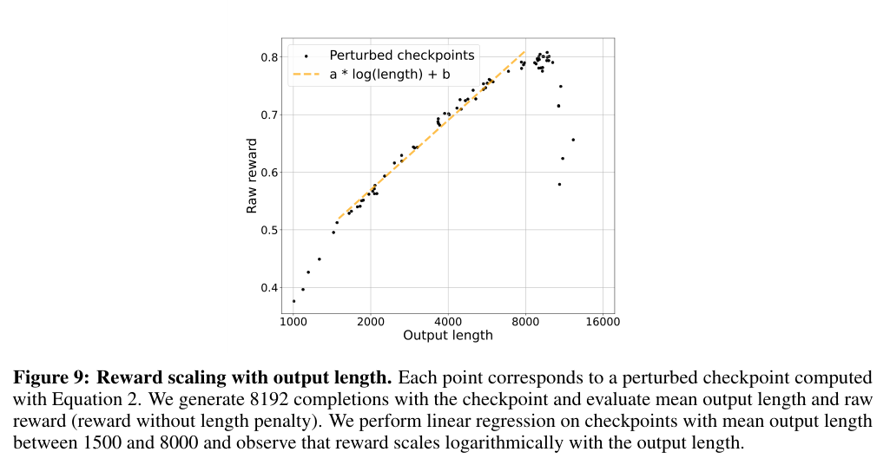
RL 训练使用的初始 checkpoint，即 Mistral Small 3 和 Mistral Medium 3，都是多模态模型，并配有相应的视觉编码器。在 RL 训练阶段，由于模型仅用文本数据训练，（接下一页）
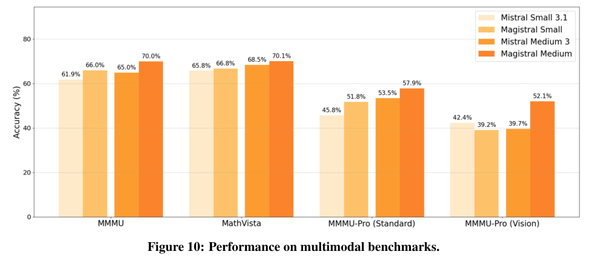
（接上一页）人们可能预期多模态表现会下降。然而，恰恰相反，我们发现模型不仅保留多模态能力，还意外发展出更强的多模态推理能力。得到的模型在多模态基准上也展现出更好的表现。
我们报告了专门评估推理能力的多模态基准结果，具体包括 MathVista [Lu et al., 2024]、MMMU [Yue et al., 2024] 和 MMMU-Pro [Yue et al., 2025]。图 10 的结果显示，大多数基准没有出现表现退化；MMMU（+5%，达到 70%）、MMMU-Pro-Standard（+4.4%，达到 57.9%）和 MMMU-Pro-Vision（+12%，达到 52.1%）均有明显提升。虽然最显著的提升出现在需要文本推理的科学问题中，但我们观察到，模型将扩展的思考过程迁移到所有类型的问题上（定性示例见图 14、15、16）。
与第 7.2 节的多模态能力类似，我们的 RL checkpoint 保持甚至改善了工具调用和指令遵循能力 [Zhou et al., 2023]（表 6）。这使我们能够将模型直接与现有工具集成，如表中所示。
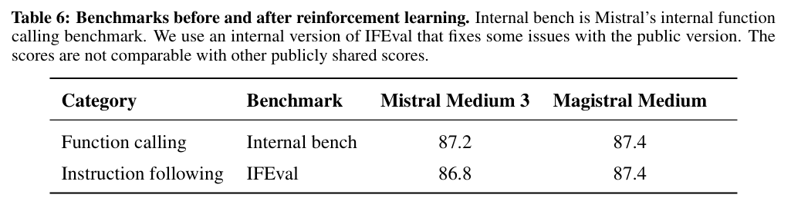
本节介绍我们尝试过但最终没有采用的各种方法，因为它们没有带来任何表现改善。
竞赛编程对正确性和复杂度约束有严格要求，这会导致奖励稀疏，奖励多样性有限，经常使大量代码输出被丢弃。
为解决这个问题，我们试验了一种按比例给予的奖励：以通过测试的比例为依据，替代第 2.2.2 节讨论的二元奖励。在一个使用 24B 模型、持续 250 个步骤的消融实验中，（接下一页）
（接上一页）我们发现，按比例奖励的训练更快，丢弃的数据减少至三分之一。然而，这种方法使最终基准表现略低：LiveCodeBench 下降 2%（图 11a），生成长度的增长也更慢（图 11b）。
我们希望，以通过测试比例为依据的奖励，能比简单通过／失败为 RL 训练提供更丰富的信号。然而，潜在的问题是，部分奖励也可能为错误解答提供虚假信号，并且对不同实现之间的细微不一致更加敏感，从而可能使训练 batch 的意义减弱。
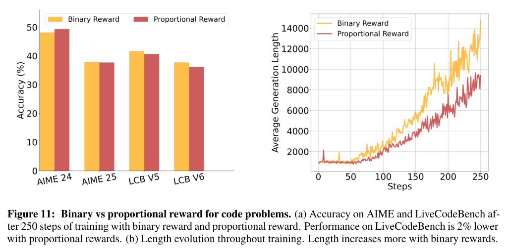
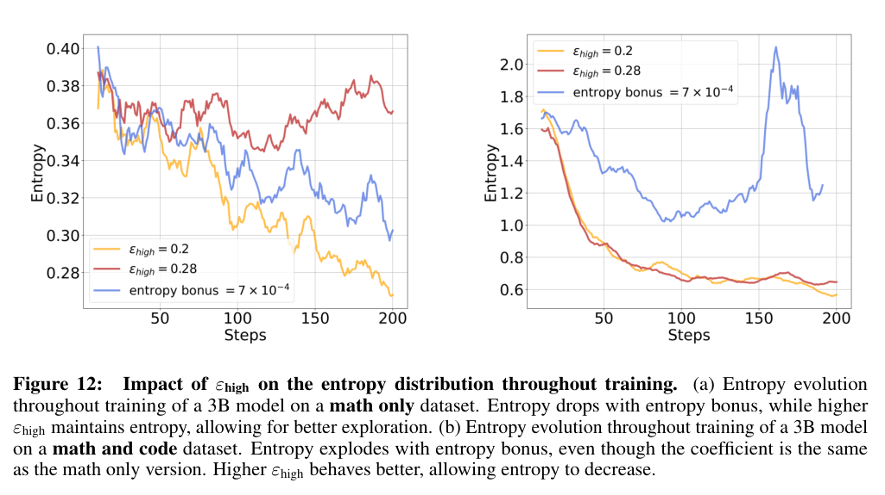
为了在 RL 训练中鼓励探索并防止熵坍缩，文献 [Schulman et al., 2017] 中一种常见策略是加入熵奖励损失项。然而，我们发现这种策略不稳定，因为熵奖励的效果会随数据集显著变化。对于纯数学数据集，使用熵奖励时熵会下降，而更高的 \(\epsilon _{high}\) 能维持熵，增强探索（图 12a）。对于数学与代码混合数据集，熵奖励会使熵过度增长（即使系数与纯数学训练相同）；更高的 \(\epsilon _{high}\) 则允许熵下降，改善利用（图 12b）。
相反，我们发现依赖 \(\epsilon _{high}\) 更有效，文献 [Yu et al., 2025, Wang et al., 2025] 也指出了这一点。该方法避免了熵奖励相关的不稳定问题。
控制熵的另一种方法是在 PPO 损失中加入 KL 项。然而，由于预期生成分布会显著偏离原始模型，我们发现使用 KL 惩罚主要会阻碍训练，与先前发现 [Yu et al., 2025] 一致。我们尝试在训练期间使用权重的指数移动平均作为 KL 参考，但发现手动调整 \(\epsilon _{high}\) 更简单。
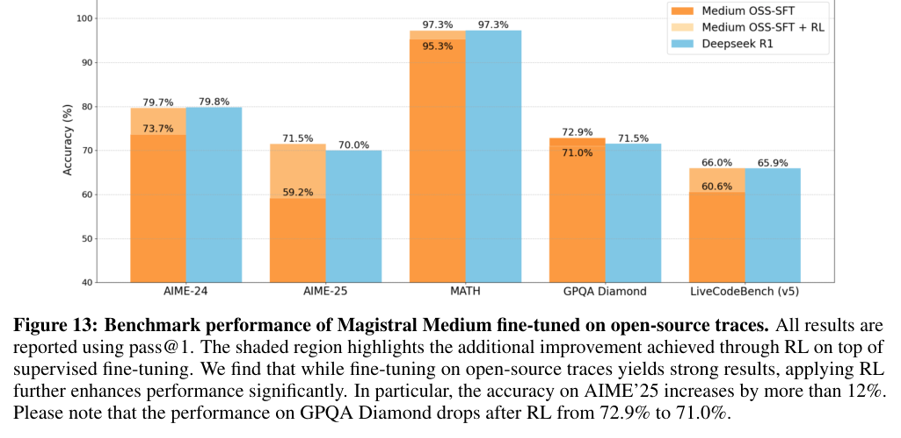
作为一个实验，我们还尝试先使用开源推理数据集 OpenThoughts [Guha et al., 2025] 和 OpenR1 的代码子集 [Hugging Face, 2025, Penedo et al., 2025] 微调 Mistral Medium 3，包含这些数据集中的提示和生成输出，即 Deepseek R1 生成的轨迹。总计约 1.3M 个生成输出。随后，我们在这个微调 checkpoint 上，使用最困难的数据子集运行 RL。如图 13 所示，RL 相对 SFT checkpoint 带来了显著表现提升。具体而言，RL 模型在 AIME’25 上提高超过 10 个点，在 LiveCodeBench 上提高 5 个点，最终在代码和数学基准上达到与 Deepseek-R1 相当的表现。
Magistral 是我们通过强化学习迈向具有通用能力系统的第一步。我们期待接下来面临的研究问题：哪些损失与优化算法最合适；通过模型自身推理轨迹进行引导，能够释放多少收益；以及如何将计算量扩展到下一个数量级。展望未来，我们也期待通过工具使用、集成多模态和 agent，在广泛应用中推动 RL 的边界。在探索这一前沿的过程中，我们仍致力于以透明而乐观的方式为科学作出贡献。
Marcin Andrychowicz, Anton Raichuk, Piotr Stańczyk, Manu Orsini, Sertan Girgin, Raphael Marinier, Léonard Hussenot, Matthieu Geist, Olivier Pietquin, Marcin Michalski, Sylvain Gelly, and Olivier Bachem. on-policy 强化学习中什么最重要？一项大规模实证研究, 2020. 链接：https://arxiv.org/abs/2006.05990.
DeepSeek-AI, Daya Guo, Dejian Yang, Haowei Zhang, Junxiao Song, Ruoyu Zhang, Runxin Xu, Qihao Zhu, Shirong Ma, Peiyi Wang, Xiao Bi, Xiaokang Zhang, Xingkai Yu, Yu Wu, Z. F. Wu, Zhibin Gou, Zhihong Shao, Zhuoshu Li, Ziyi Gao, Aixin Liu, Bing Xue, Bingxuan Wang, Bochao Wu, Bei Feng, Chengda Lu, Chenggang Zhao, Chengqi Deng, Chenyu Zhang, Chong Ruan, Damai Dai, Deli Chen, Dongjie Ji, Erhang Li, Fangyun Lin, Fucong Dai, Fuli Luo, Guangbo Hao, Guanting Chen, Guowei Li, H. Zhang, Han Bao, Hanwei Xu, Haocheng Wang, Honghui Ding, Huajian Xin, Huazuo Gao, Hui Qu, Hui Li, Jianzhong Guo, Jiashi Li, Jiawei Wang, Jingchang Chen, Jingyang Yuan, Junjie Qiu, Junlong Li, J. L. Cai, Jiaqi Ni, Jian Liang, Jin Chen, Kai Dong, Kai Hu, Kaige Gao, Kang Guan, Kexin Huang, Kuai Yu, Lean Wang, Lecong Zhang, Liang Zhao, Litong Wang, Liyue Zhang, Lei Xu, Leyi Xia, Mingchuan Zhang, Minghua Zhang, Minghui Tang, Meng Li, Miaojun Wang, Mingming Li, Ning Tian, Panpan Huang, Peng Zhang, Qiancheng Wang, Qinyu Chen, Qiushi Du, Ruiqi Ge, Ruisong Zhang, Ruizhe Pan, Runji Wang, R. J. Chen, R. L. Jin, Ruyi Chen, Shanghao Lu, Shangyan Zhou, Shanhuang Chen, Shengfeng Ye, Shiyu Wang, Shuiping Yu, Shunfeng Zhou, Shuting Pan, S. S. Li, Shuang Zhou, Shaoqing Wu, Shengfeng Ye, Tao Yun, Tian Pei, Tianyu Sun, T. Wang, Wangding Zeng, Wanjia Zhao, Wen Liu, Wenfeng Liang, Wenjun Gao, Wenqin Yu, Wentao Zhang, W. L. Xiao, Wei An, Xiaodong Liu, Xiaohan Wang, Xiaokang Chen, Xiaotao Nie, Xin Cheng, Xin Liu, Xin Xie, Xingchao Liu, Xinyu Yang, Xinyuan Li, Xuecheng Su, Xuheng Lin, X. Q. Li, Xiangyue Jin, Xiaojin Shen, Xiaosha Chen, Xiaowen Sun, Xiaoxiang Wang, Xinnan Song, Xinyi Zhou, Xianzu Wang, Xinxia Shan, Y. K. Li, Y. Q. Wang, Y. X. Wei, Yang Zhang, Yanhong Xu, Yao Li, Yao Zhao, Yaofeng Sun, Yaohui Wang, Yi Yu, Yichao Zhang, Yifan Shi, Yiliang Xiong, Ying He, Yishi Piao, Yisong Wang, Yixuan Tan, Yiyang Ma, Yiyuan Liu, Yongqiang Guo, Yuan Ou, Yuduan Wang, Yue Gong, Yuheng Zou, Yujia He, Yunfan Xiong, Yuxiang Luo, Yuxiang You, Yuxuan Liu, Yuyang Zhou, Y. X. Zhu, Yanhong Xu, Yanping Huang, Yaohui Li, Yi Zheng, Yuchen Zhu, Yunxian Ma, Ying Tang, Yukun Zha, Yuting Yan, Z. Z. Ren, Zehui Ren, Zhangli Sha, Zhe Fu, Zhean Xu, Zhenda Xie, Zhengyan Zhang, Zhewen Hao, Zhicheng Ma, Zhigang Yan, Zhiyu Wu, Zihui Gu, Zijia Zhu, Zijun Liu, Zilin Li, Ziwei Xie, Ziyang Song, Zizheng Pan, Zhen Huang, Zhipeng Xu, Zhongyu Zhang, and Zhen Zhang. DeepSeek-R1：通过强化学习激励 LLM 的推理能力, 2025. 链接：https://arxiv.org/abs/2501.12948.
Lasse Espeholt, Hubert Soyer, Remi Munos, Karen Simonyan, Vlad Mnih, Tom Ward, Yotam Doron, Vlad Firoiu, Tim Harley, Iain Dunning, et al. IMPALA：采用重要性加权 actor–learner 架构的可扩展分布式深度强化学习. In International conference on machine learning, 第 1407–1416 页. PMLR, 2018.
Paul Gauthier. Polyglot 基准. https://github.com/Aider-AI/polyglot-benchmark, 2024. 链接：https://github.com/Aider-AI/polyglot-benchmark. GitHub 仓库. 编程问题来自 Exercism 的各语言学习路径。
Etash Guha, Ryan Marten, Sedrick Keh, Negin Raoof, Georgios Smyrnis, Hritik Bansal, Marianna Nezhurina, Jean Mercat, Trung Vu, Zayne Sprague, Ashima Suvarna, Benjamin Feuer, Liangyu Chen, Zaid Khan, Eric Frankel, Sachin Grover, Caroline Choi, Niklas Muennighoff, Shiye Su, Wanjia Zhao, John Yang, Shreyas Pimpalgaonkar, Kartik Sharma, Charlie Cheng-Jie Ji, Yichuan Deng, Sarah Pratt, Vivek Ramanujan, Jon Saad-Falcon, Jeffrey Li, Achal Dave, Alon Albalak, Kushal Arora, Blake Wulfe, Chinmay Hegde, Greg Durrett, Sewoong Oh, Mohit Bansal, Saadia Gabriel, Aditya Grover, Kai-Wei Chang, Vaishaal Shankar, Aaron Gokaslan, Mike A. Merrill, Tatsunori Hashimoto, Yejin Choi, Jenia Jitsev, Reinhard Heckel, Maheswaran Sathiamoorthy, Alexandros G. Dimakis, and Ludwig Schmidt. OpenThoughts：推理模型的数据配方, 2025. 链接：https://arxiv.org/abs/2506.04178.
Dan Hendrycks, Collin Burns, Saurav Kadavath, Akul Arora, Steven Basart, Eric Tang, Dawn Song, and Jacob Steinhardt. 使用 MATH 数据集衡量数学问题求解能力. arXiv 预印本 arXiv:2103.03874, 2021.
Jian Hu, Xibin Wu, Zilin Zhu, Weixun Wang, Dehao Zhang, Yu Cao, et al. OpenRLHF：易用、可扩展且高性能的 RLHF 框架. arXiv 预印本 arXiv:2405.11143, 2024.
Jingcheng Hu, Yinmin Zhang, Qi Han, Daxin Jiang, Xiangyu Zhang, and Heung-Yeung Shum. Open-Reasoner-Zero：在基础模型上扩展强化学习的开源方法, 2025. 链接：https://arxiv.org/abs/2503.24290.
Hugging Face. Open R1：DeepSeek-R1 的完全开放复现, 2025 年 1 月. 链接：https://github.com/huggingface/open-r1.
Aaron Jaech, Adam Kalai, Adam Lerer, Adam Richardson, Ahmed El-Kishky, Aiden Low, Alec Helyar, Aleksander Madry, Alex Beutel, Alex Carney, et al. OpenAI o1 系统卡. arXiv 预印本 arXiv:2412.16720, 2024.
Naman Jain, King Han, Alex Gu, Wen-Ding Li, Fanjia Yan, Tianjun Zhang, Sida Wang, Armando Solar-Lezama, Koushik Sen, and Ion Stoica. LiveCodeBench：面向代码的大语言模型全面、无污染评估. arXiv 预印本 arXiv:2403.07974, 2024.
Armand Joulin, Edouard Grave, Piotr Bojanowski, Matthijs Douze, Hérve Jégou, and Tomas Mikolov. fastText.zip：压缩文本分类模型. arXiv 预印本 arXiv:1612.03651, 2016.
Hao Li, Zheng Xu, Gavin Taylor, Christoph Studer, and Tom Goldstein. 可视化神经网络的损失景观, 2018. 链接：https://arxiv.org/abs/1712.09913.
Zichen Liu, Changyu Chen, Wenjun Li, Penghui Qi, Tianyu Pang, Chao Du, Wee Sun Lee, and Min Lin. 理解类 R1-Zero 训练：一种批判性视角. arXiv 预印本 arXiv:2503.20783, 2025.
Pan Lu, Hritik Bansal, Tony Xia, Jiacheng Liu, Chunyuan Li, Hannaneh Hajishirzi, Hao Cheng, Kai-Wei Chang, Michel Galley, and Jianfeng Gao. MathVista：评估基础模型在视觉语境中的数学推理能力. In International Conference on Learning Representations (ICLR), 2024.
MistralAI. Mistral Large 2. https://mistral.ai/news/mistral-large-2407, 2024.
MistralAI. Mistral Medium 3. https://mistral.ai/fr/news/mistral-medium-3, 2025.
Michael Noukhovitch, Shengyi Huang, Sophie Xhonneux, Arian Hosseini, Rishabh Agarwal, and Aaron Courville. 异步 RLHF：面向语言模型更快、更高效的 off-policy RL. arXiv 预印本 arXiv:2410.18252, 2024.
Guilherme Penedo, Anton Lozhkov, Hynek Kydlíček, Loubna Ben Allal, Edward Beeching, Agustín Piqueres Lajarín, Quentin Gallouédec, Nathan Habib, Lewis Tunstall, and Leandro von Werra. Codeforces CoT 数据集. https://huggingface.co/datasets/open-r1/codeforces-cots, 2025.
Long Phan, Alice Gatti, Ziwen Han, Nathaniel Li, Josephina Hu, Hugh Zhang, Chen Bo Calvin Zhang, Mohamed Shaaban, John Ling, Sean Shi, et al. 人类最后的考试（Humanity’s Last Exam）. arXiv 预印本 arXiv:2501.14249, 2025.
David Rein, Betty Li Hou, Asa Cooper Stickland, Jackson Petty, Richard Yuanzhe Pang, Julien Dirani, Julian Michael, and Samuel R Bowman. GPQA：一个研究生级、无法通过 Google 搜索解决的问答基准. In First Conference on Language Modeling, 2024.
Youcef Saad. 稀疏线性系统的迭代方法. SIAM, 2003.
John Schulman, Filip Wolski, Prafulla Dhariwal, Alec Radford, and Oleg Klimov. 近端策略优化算法. arXiv 预印本 arXiv:1707.06347, 2017.
Zhihong Shao, Peiyi Wang, Qihao Zhu, Runxin Xu, Junxiao Song, Xiao Bi, Haowei Zhang, Mingchuan Zhang, Y. K. Li, Y. Wu, and Daya Guo. DeepSeekMath：推动开放语言模型的数学推理极限, 2024. 链接：https://arxiv.org/abs/2402.03300.
Guangming Sheng, Chi Zhang, Zilingfeng Ye, Xibin Wu, Wang Zhang, Ru Zhang, Yanghua Peng, Haibin Lin, and Chuan Wu. HybridFlow：灵活且高效的 RLHF 框架. arXiv 预印本 arXiv:2409.19256, 2024.
Shenzhi Wang, Le Yu, Chang Gao, Chujie Zheng, Shixuan Liu, Rui Lu, Kai Dang, Xionghui Chen, Jianxin Yang, Zhenru Zhang, et al. 超越 80/20 法则：高熵少数 token 驱动 LLM 推理的有效强化学习. arXiv 预印本 arXiv:2506.01939, 2025.
Bo Wu, Sid Wang, Yunhao Tang, Jia Ding, Eryk Helenowski, Liang Tan, Tengyu Xu, Tushar Gowda, Zhengxing Chen, Chen Zhu, et al. LlamaRL：用于高效大规模 LLM 训练的分布式异步强化学习框架. arXiv 预印本 arXiv:2505.24034, 2025.
Qiying Yu, Zheng Zhang, Ruofei Zhu, Yufeng Yuan, Xiaochen Zuo, Yu Yue, Tiantian Fan, Gaohong Liu, Lingjun Liu, Xin Liu, et al. DAPO：大规模开源 LLM 强化学习系统. arXiv 预印本 arXiv:2503.14476, 2025.
Xiang Yue, Yuansheng Ni, Kai Zhang, Tianyu Zheng, Ruoqi Liu, Ge Zhang, Samuel Stevens, Dongfu Jiang, Weiming Ren, Yuxuan Sun, Cong Wei, Botao Yu, Ruibin Yuan, Renliang Sun, Ming Yin, Boyuan Zheng, Zhenzhu Yang, Yibo Liu, Wenhao Huang, Huan Sun, Yu Su, and Wenhu Chen. MMMU：面向专家级 AGI 的大规模多学科多模态理解与推理基准. In Proceedings of CVPR, 2024.
Xiang Yue, Tianyu Zheng, Yuansheng Ni, Yubo Wang, Kai Zhang, Shengbang Tong, Yuxuan Sun, Botao Yu, Ge Zhang, Huan Sun, Yu Su, Wenhu Chen, and Graham Neubig. MMMU-Pro：更稳健的多学科多模态理解基准. In Proceedings of ACL, 2025.
Jeffrey Zhou, Tianjian Lu, Swaroop Mishra, Siddhartha Brahma, Sujoy Basu, Yi Luan, Denny Zhou, and Le Hou. 大语言模型的指令遵循评估, 2023. 链接：https://arxiv.org/abs/2311.07911.
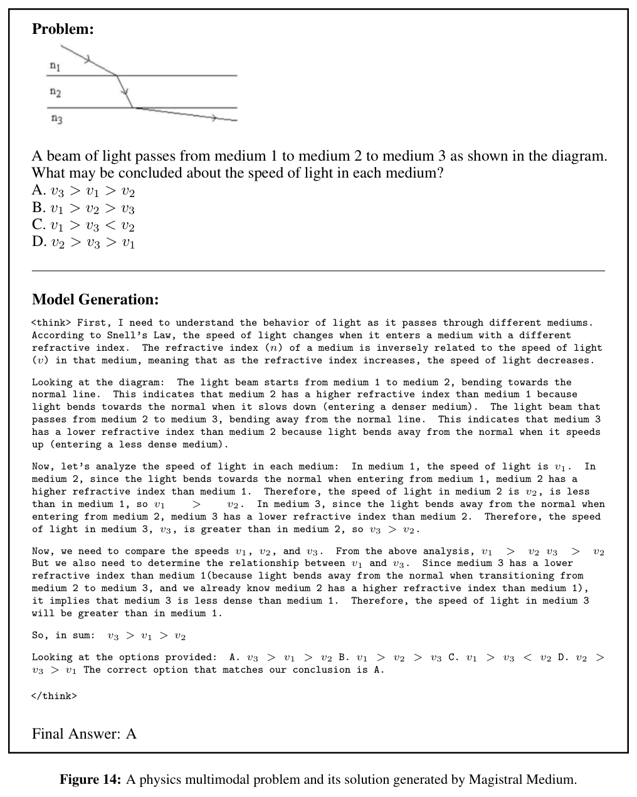
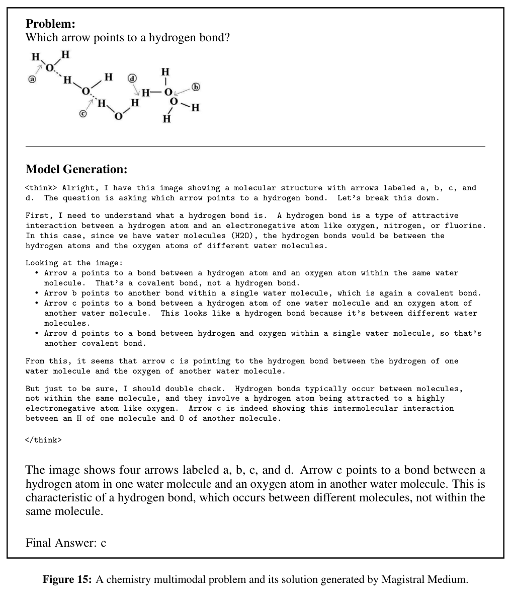
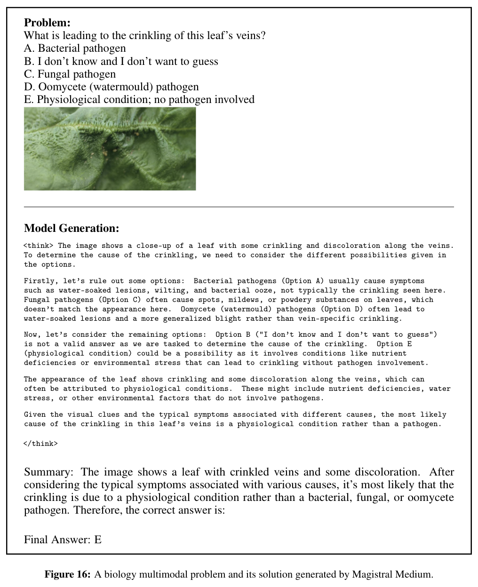